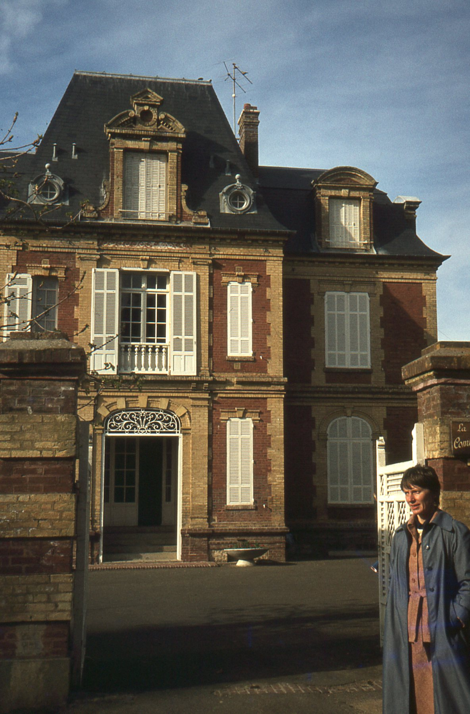
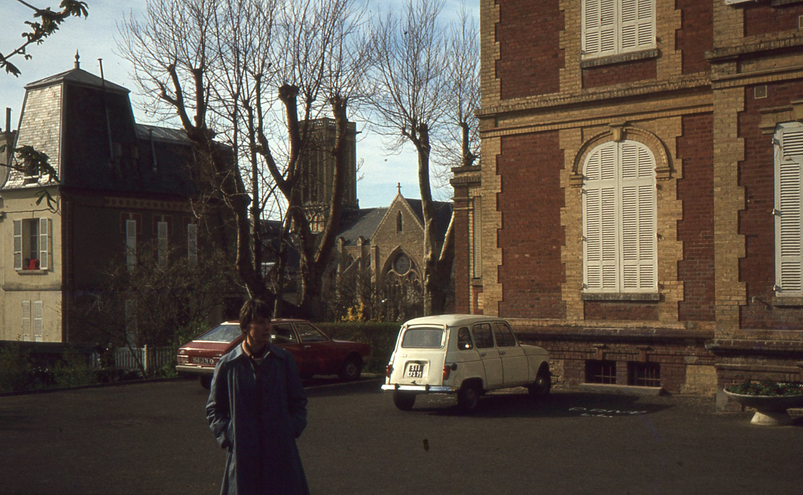

Angelo Mariani
La Commanderie

La Commanderie en 1979

La Commanderie en 1979. Au fond, l'église Saint-Martin
Si l'on en croit les historiens locaux de Villers-sur-mer (Calvados), petite villégiature de la côte normande, Angelo Mariani s'était fait construire dans cette commune la grande villa qui porte aujourd'hui le nom de "La Commanderie", mais dont le portail s'orne toujours d'un M, initiale de Mariani. Cette somptueuse demeure aurait pu lui permettre de poursuivre, auprès des propriétaires fortunés des villas voisines, la promotion de son Vin de Coca.
C'est du moins ce que l'on comprend, par exemple, à la lecture de l'article de M. Jean-Pierre Loevenbruck, Président de l'"Association Villers Animations" paru dans la revue "Le Pays d'Auge", Mai-Juin 2008 (58ème année, N°3). En voici un court extrait:
"Parmi les personnages qui ont hanté Villers, le poète-pharmacien Angelo Mariani (1838-1914) demeure l'un des plus étranges. Il aimait à se faire appeler Horace et inondait les belles Villersoises de poèmes, de sonnets languissants, à la fois à la gloire de leurs charmes et à celle du vin."
Les recherches effectuées par l'une des co-propriétaires, Madame Boula de Mareüil et l'association SAAM, montrent que ce n'est pas Angelo qui fut le propriétaire-constructeur de la villa connue aujourd'hui sous le nom de "La Commanderie", mais son frère cadet Horace-Simon Mariani, né en Corse en janvier 1847. Ce dernier fit l'acquisition d'un terrain de près de 3200 m² en novembre 1887 et y fit construire la villa que l'on connaît aujourd'hui, où il donnait régulièrement de fastueuses soirées.
Une "énigme" demeure cependant au sujet de cet Horace Mariani: l'origine de sa fortune. Il est probable que son frère Angélo, réputé pour sa générosité, en fut l'artisan et qu'elle ne survécut pas longtemps à ce frère protecteur. Comme son homonyme latin, Horace était en effet poète de son état et il publia en 1908 et 1910 des vers de qualité douteuse. Il dut se séparer de la villa, trois ans après la mort de son frère, survenue en avril 1914. Lui-même mourut vers 1922 à Paris où il est enterré.
L'église de Villers-sur-Mer, surnommée la "Sainte Chapelle normande" en raison des magnifiques vitraux qui entourent complètement l'édifice, a dû être construite à la même époque que la Villa Mariani, si l'on en juge par les beaux carrelages identiques qui ornent les sols de l'une et de l'autre.
Source de la présente page: l'étude de Madame de Mareüil consultable sur le site www.copro-net.fr.

Fond sonore: "Chur" d'Auber cité par Henri-Louis Obin